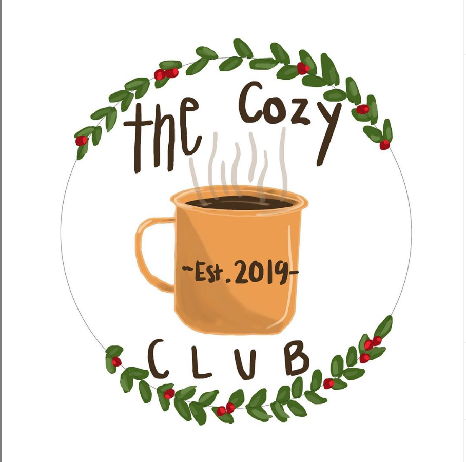

I have 5 siblings two sisters and 3 brothers
I am a twin
I know a little Japanese I can also read and write a little bit.
こんにちは! Konichiwa means hello!
This is a logo I designed for a starter company called the Cozy Club. They make handmade goodies mostly hand knitted hats at the moment.
This was done on photoshop using a wacom tablet.
If you are interested in their prodocts or would like to see future goodies,
check out their instagram!